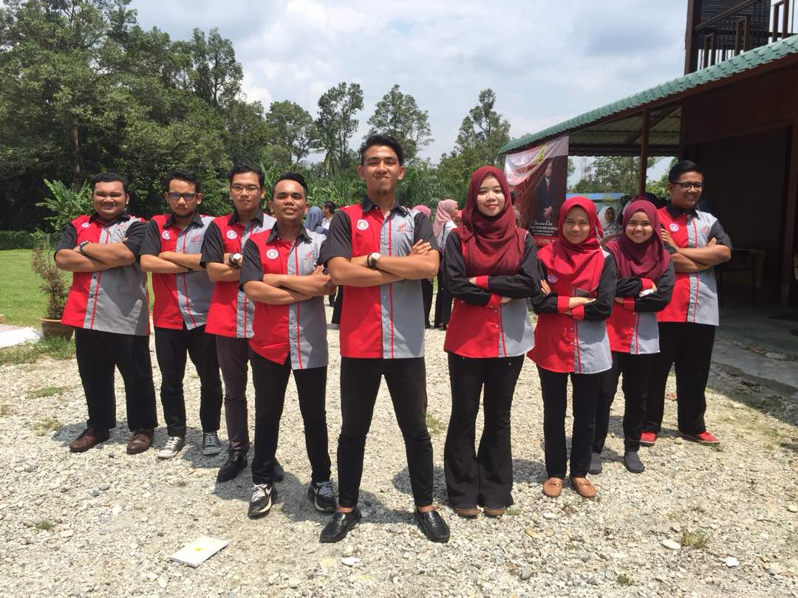
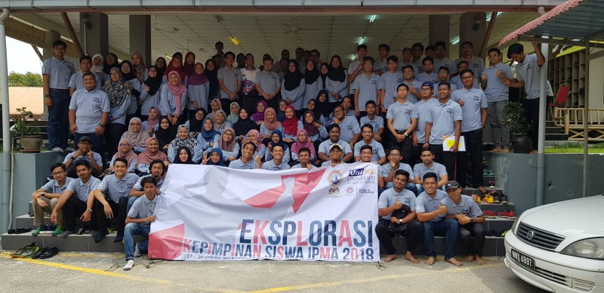
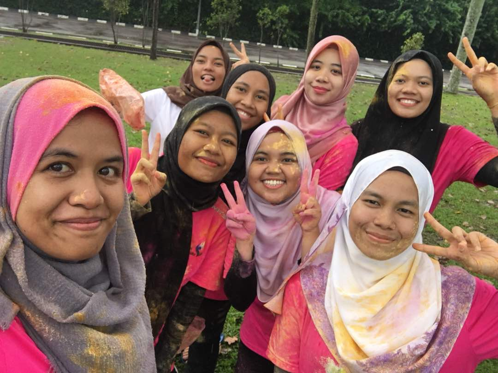
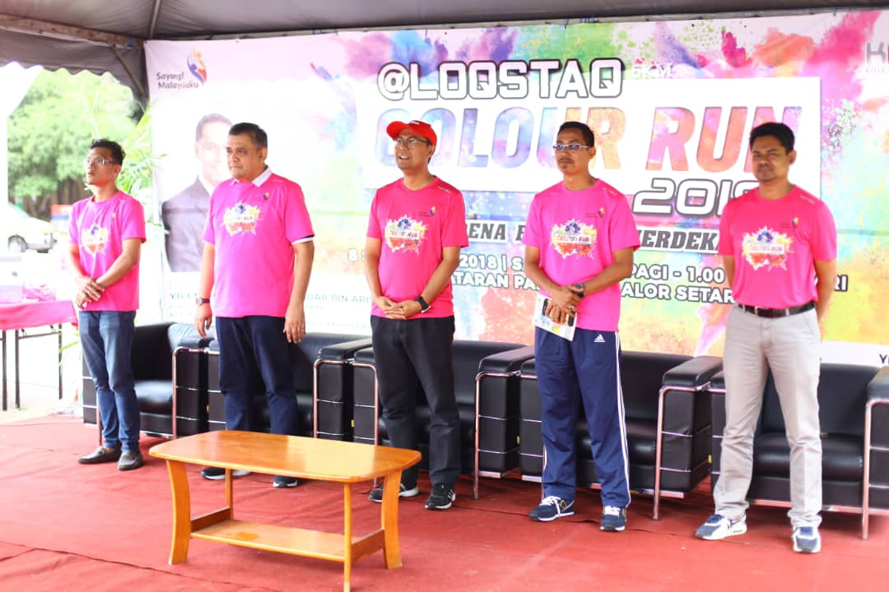
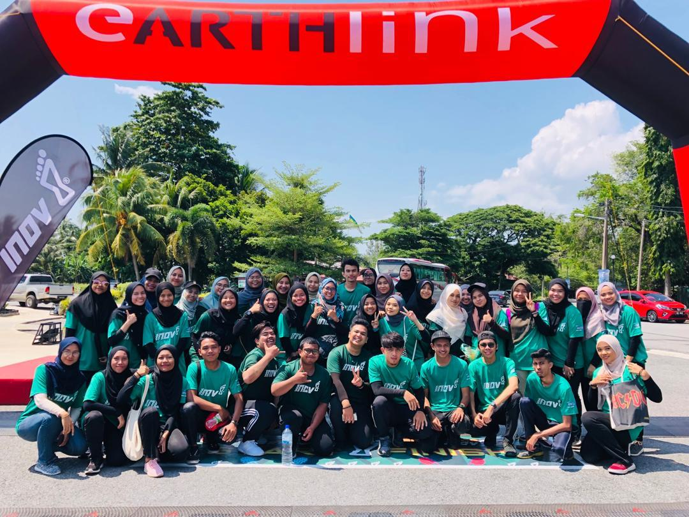
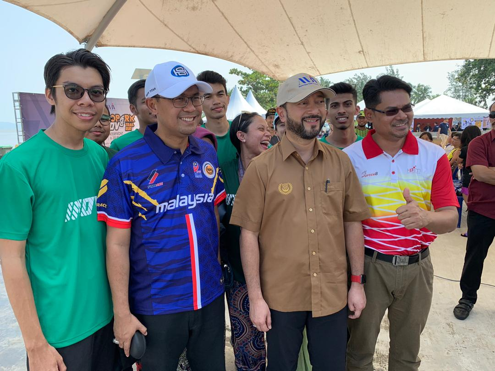
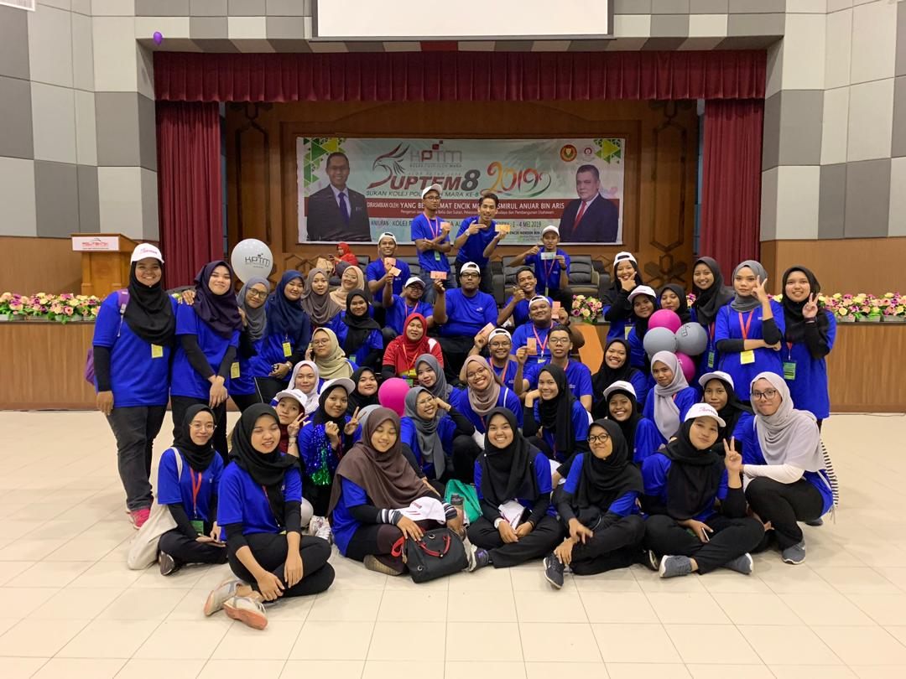
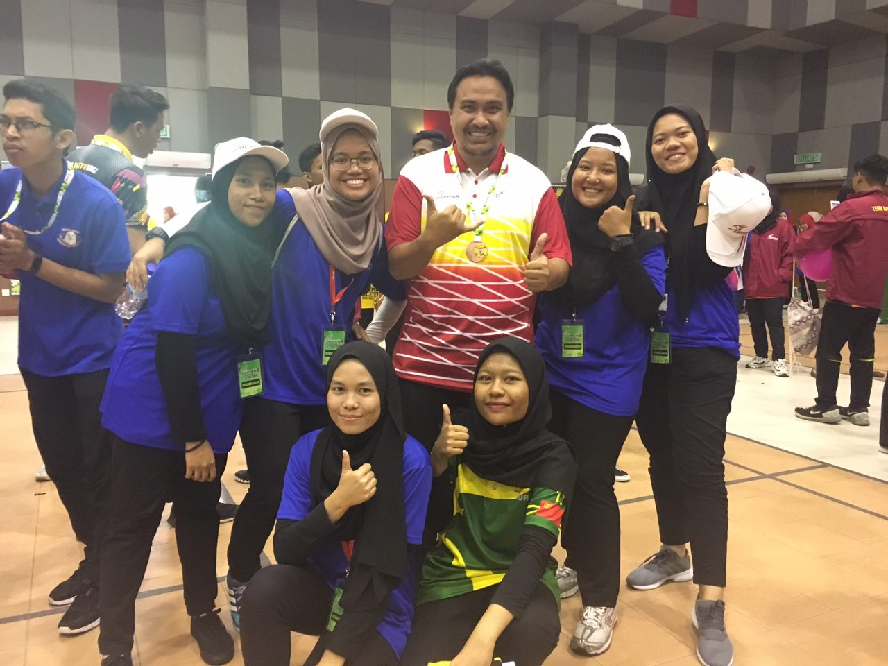

- In February 2018, during a Chinese New Year I replaced people to work there for 1 week. I worked there as a promoter in the baby clothes. My job is to help customers to find the size and others. From that, I was able to increase my experience and confidence in speaking with people.
Students Representative Council (SRC)
- In 2018 during my second semester, I participated in the student representative council elections. My senior who helped me to fill out the form because I was on leave for the semester. After a few weeks, the polls opened and in the evening, Encik Azmi announced who won the vote. I never thought that I won the competition. The positions that I hold for a year are Exco Residents and Non-Residents. Since then, I have been more confidence to speak in front of people because I'm always been an emcee for the events. Even though I'm busy managing things, I was able to manage my time with lessons. I faced many challenges when I was SRC. I was about to give up because I was tired of being a leader but I kept going until the end. Besides that, a lot of leadership camp that I participated such as at Batang Kali camp, Pusat Kepimpinan MARA in Mrsm Lenggong and others. Other than that, my team SRC and I have held Majlis Jamuan Raya, Language Weeks, Pre-Graduation, Sports Days between course and many other events that we have ever done. When preparing any event, it would spark a fight because for not cooperating with each other. From that, the variety of lessons I got.


LoqStaq Color Run 2018
- My SRC advisor was planning to organize Loqstaq Color Run to celebrate Independence Day. So my team agreed to hold that big event. This is my first time hosting a big event involving the public, the Honorable, Ceo Mara and many more. The position I got while hosting this event was as secretary. My job is to provide letters such as donations, use of venues, letters of appreciation and more. Before the event is held, all volunteer and committee members play a role do the work that they should prepare. For example, food bureau seeking tenders for the provision of food to the participants for breakfast and lunch. Me and other committee members went to a big companies to look for donations like Perbadanan Kemajuan Negeri Kedah (PKNK) companies, Bina DarulAman Berhad (BDB) and others. From there, I was able to increase my confidence in talking to high-ranking people. I was assigned to be an emcee on the day of the incident. Many times my partner and I practiced reading the script to avoid any problems. Thank God everything went well.


Jerai GeoPark Inov8 Trail Run 2019
- I joined this volunteer before the final examination of semester 4. I took this opportunity to join this event because it involved international people. The trail run held in Gunung Jerai Yan, Kedah. So we were required to spend the night there because at 4am we had to be at our respective checkpoints. We all boarded on the truck because they had to send us to the checkpoint. Me and 2 of my friends need to watch over at the foothills of Gunung Jerai with 3 other medic students. We also get acquainted with them and us sharing about our courses. When participants have arrived, we gave them a cup of water and bananas to add their energy. When time is up, newly arrivals at the foot of the mountain are asked to return because they are running out of time. We pack and relax at Pantai Murni. Many participants from abroad have joined this event.


Kejohanan Sukan Kolej Poly-Tech Mara (SUPTEM) 2019
- In May 2019, Kptm Alor Setar has been selected to host the Suptem involving 8 Kptm. I also volunteered and requested to take care of the sepak takraw area. This Suptem is held in Polimas Jitra, Kedah. We were asked to spend the night there because the event was held for 4 days. Various games organized such as volleyball, netball, petanque, badminton and futsal. During the closing day, I was assigned to be a protocol for usher the winning participants to go on stage. I can also meet my SRC friends from others Kptm.


A visit to the Parliament of Malaysia
- In 2018, I participated in a visit to the Parliament of Malaysia to take experience. For 2 days and 1 night we were there. Before we entered the state assembly, we were asked to wear blazers and decent clothes. We are not allowed to make any noise when we enter the state assembly. During the discussion, they almost had a fight with the opposition. From that, I think that being a Malaysian leader is not easy because you have to deal with all kinds of people's attitudes. After the morning session ended, we went to see the Syed Saddiq and Dato Kj for taking a picture. After that, we gradually returned home and headed to Ikea for shopping.